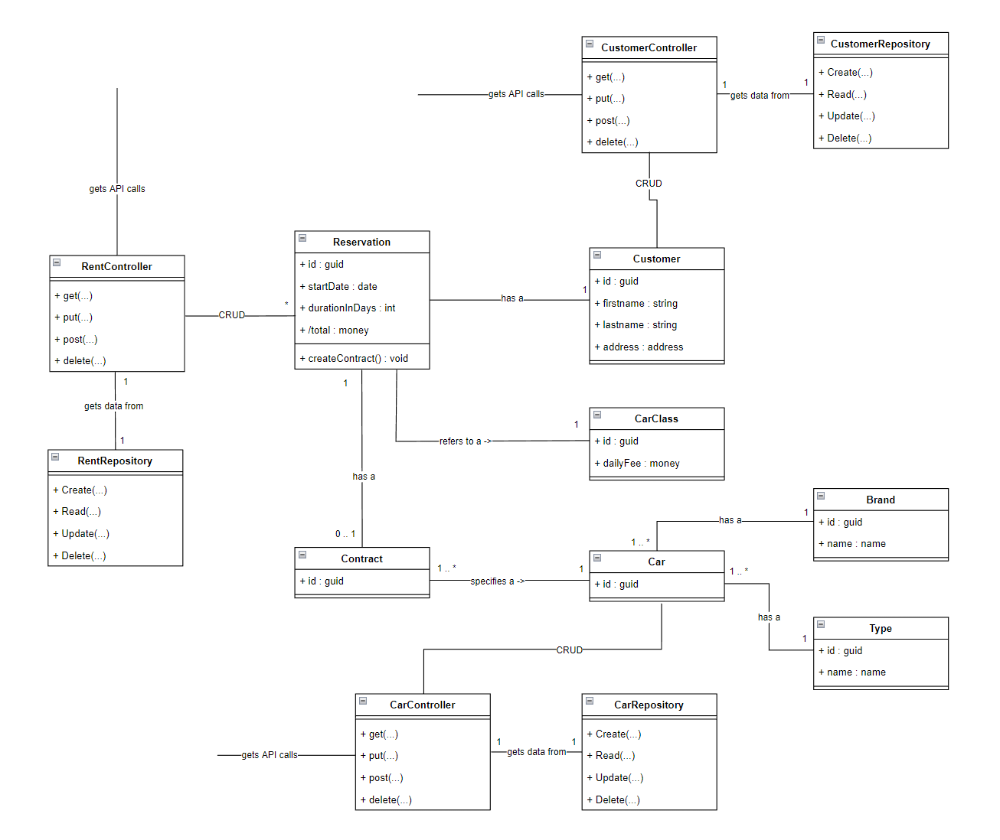

CarRent
Einführung und Ziele
Aufgabenstellung
Es soll ein neues Autovermietungssystem „CarRent“ erstellt werden. Das System soll aus einem Server-Teil und optional einen Web-Client bestehen.
Folgende Detailinformationen liegen unstrukturiert über das zu entwickelnde System vor: - Der Sachbearbeiter kann Kunden mit Namen und Adresse und Kundennummer im System verwalten, d.h. erfassen, bearbeiten, löschen und den Kunden mit dessen Namen oder Kundennummer suchen. - Der Sachbearbeiter kann zudem die Autos von CarRent verwalten und nach denen suchen. - Jedes Auto kann einer bestimmten Klasse zwischen Luxusklasse, Mittelklasse oder Einfachklasse zugeordnet werden und besitzt zudem eine Marke, einen Typ und eine eindeutige Identifikation. - Jede Klasse besitzt eine Tagesgebühr. - Bei einer neuen Reservation kann der Kunde ein Auto aus einer bestimmten Klasse wählen. Er muss zudem die Anzahl der Tage angeben, die er das Auto gerne mieten möchte. Dabei werden die Gesamtkosten berechnet. Wird die Reservation gespeichert, so wird sie mit einer Reservationsnummer ablegt. - Bei Abholung des Autos wird die Reservation in einen Mietvertrag umgewandelt.
UC 01: CRUD & Search Customers
Der Sachbearbeiter verwaltet Kunden im System (CRUD).
UC 02: Search Customers
Der Sachbearbeiter sucht und findet Kunden im System mittels Kundennummer oder dessen Namen.
UC 03: CRUD Cars
Der Sachbearbeiter verwaltet Fahrzeuge im System (CRUD). Der Sachbearbeiter kann Fahrzeuge einer bestimmten Klasse (Luxusklasse, Mittelklasse, Einfachklasse), Marke, Typ und eindeutiger ID zuweisen.
UC 04: Search Cars
Der Sachbearbeiter sucht und findet Fahrzeuge im System mittels derer ID.
UC 05: Daily Fee
Der Sachbearbeiter kann der Fahrzeugklasse eine Tagesgebühr zuweisen.
UC 06: Reservation
Der Kunde kann eine Reservation auf eine bestimmte Fahrzeugklasse mit einer bestimmten Anzahl Tage erstellen. Die Gesamtkosten werden vom System automatisch berechnet. Beim Speichern der Reservation wird durch das System eine Reservationsnummer vergeben.
UC 07: Contract creation
Das System erstellt einen Mietvertrag basierend auf der Reservation, sobald der Kunde das Fahrzeug abholt.
Qualitätsziele
| Priorität | Qualitätsziel | Szenario |
|---|---|---|
| 1 | Perfomante User Experience | Interaktion mit Webseite |
| 2 | Data Consistency | Ausfall von Server darf nicht zu Datenverlust führen |
| 3 | System availability | Auch bei Ausfall eines Servers soll System innerhalb von 2 Minuten wieder verfügbar sein |
Stakeholder
| Rolle | Kontakt | Erwartungshaltung |
|---|---|---|
| Lehrperson | Cedric Menzi | Dokumentation nach arc42 |
Randbedingungen
- Die Daten sollen mittels Repository Pattern in eine Datenbank gespeichert werden können.
- Die Business Logik soll auf dem Backend laufen und eine REST APIs anbieten.
- Es soll zuerst ein Monolith erstellt werden und später auf eine Micro Service Architektur überführt werden
Kontextabgrenzung
- Login und Authentifizierung von Kunden und Sachbearbeitern wird in diesem Projekt ausgeblendet
- Die Implementierung des Persistence Layers wird in einem späteren Zeitpunkt durchgeführt
Technischer Kontext
Lösungsstrategie
- Implementierung des Repository Patterns
- Trennung des Persistence und Business Layers über Interfaces
- Trennung des API und Business Layers
- Zugriff über REST APIs
- Design als Monolith, aber schon vorbereitet, um in eine Micro Service Architektur überführt zu werden
- Domain Driven Design
Bausteinsicht
Context
Containers
Components
Classes

Domain Model

Whitebox Gesamtsystem
Class Diagram

Component Diagram - Interfaces
Verteilungssicht
Deployement View